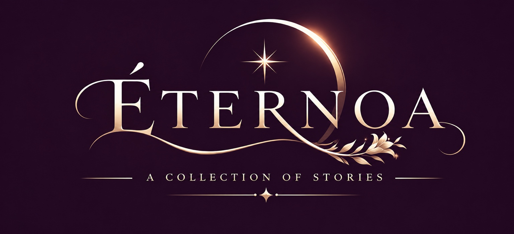
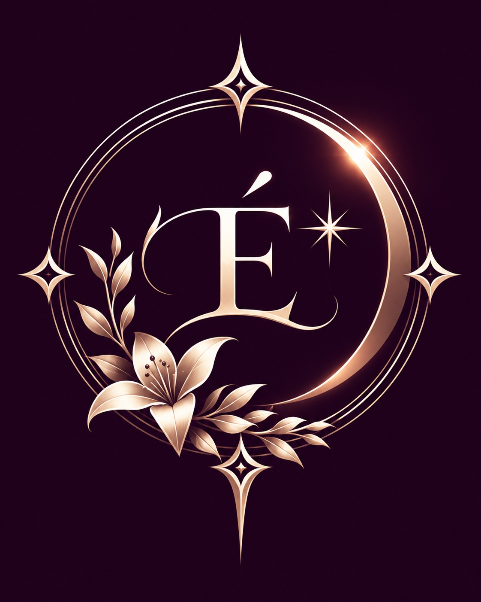

物語、キャラクター、イラスト、音楽。
想像から生まれた出会いを、ここに。
THE NEWEST STORY
LATEST RELEASE
FROM THE COLLECTION
RECENT ADDITIONS
SOUNDS FROM THE MAISON
FEATURED MUSIC
FROM THE SISTER MAISON
LATEST FROM AMOUR
LETTERS FROM THE MAISON

ÉTERNOACREATIVE MAISON
物語、キャラクター、イラスト、音楽。
想像から生まれた出会いを、ここに。
THE NEWEST STORY
FROM THE COLLECTION
SOUNDS FROM THE MAISON
FROM THE SISTER MAISON
LETTERS FROM THE MAISON